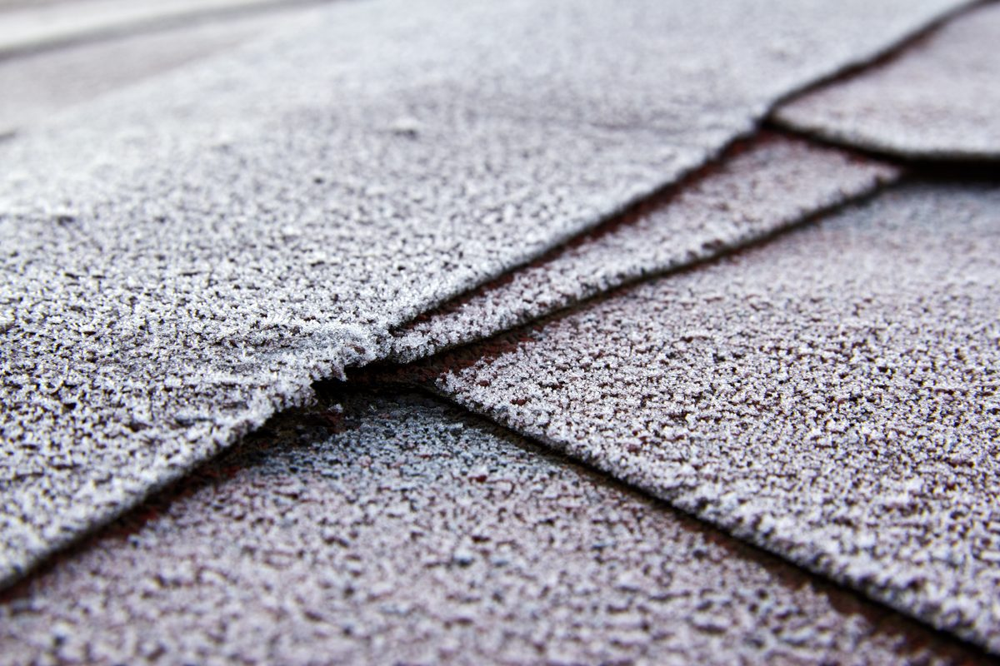

The old way to size a roof involves a tape measure, a ladder, a helper, and a homeowner watching from the driveway wondering whether you are about to fall into their azaleas.
To measure a roof without climbing it, trace the roof's outline from aerial imagery to get its area from above, find the pitch from height data or a pitch reading from the ground, then multiply the flat area by the pitch factor and divide by 100 to get squares. Add your usual waste. The result is close enough to quote from. Your estimator still confirms it on the roof before anything is ordered.
Why measure from above at all?
Two reasons, and only one of them is speed. The other is that ladders are dangerous. OSHA calls falls the leading cause of death in construction, counting 389 fatal falls to a lower level in 2024. Every climb you can save for the inspection that matters is a climb nobody has to make for a number you could have had from a desk.
Speed matters too, mostly after a storm. A hail map tells you which streets took the worst of it. When you are then deciding which hundred homes on those streets to call first, knowing which ones are 35-square jobs and which are 14-square jobs changes the order, and it changes the knock route too.
And it changes the first conversation. A homeowner who hears "your roof is about 22 squares, here is roughly what a replacement looks like" is talking to someone who did their homework. A homeowner who hears "I'll need to get up there and see" is talking to everyone else.
How do you measure a roof from aerial images?
There are three common ways, from free to paid:
- Trace it yourself. Open any satellite view, trace the roof edge including the overhangs, and read off the area. Free, and decent on simple roofs. Slow on anything with hips, valleys and dormers.
- Use public outline and height data. Building outlines are published for most of the country, Microsoft's US Building Footprints being the best-known set, and the USGS 3D Elevation Program publishes laser height scans that show how steep each roof plane is.
- Buy a measurement report. Several companies sell per-roof reports with every plane, ridge and valley drawn out. Accurate, and a cost on every address, which adds up when you are sizing a whole neighbourhood.

How do you convert roof area to squares?
A square is 100 square feet of roof. The catch is that a satellite view shows the roof flat, and a sloped roof has more surface than its shadow. The pitch factor corrects for that:
- 4/12 pitch: multiply by about 1.05
- 6/12 pitch: multiply by about 1.12
- 8/12 pitch: multiply by about 1.20
- 12/12 pitch: multiply by about 1.41
The factor is just geometry: the square root of one plus the rise over twelve, squared. You do not need to remember that. You need the table taped inside the truck.
A house whose roof measures 2,000 square feet from above, overhangs included, at a 6/12 pitch: 2,000 times 1.12 is 2,240 square feet, or 22.4 squares. Add your waste factor for the roof's shape, which runs higher on cut-up hip roofs than on a plain gable, and you have a number to price.
Where does a roof measured from above go wrong?
Usually in the same five places, which is why the ladder still gets the final word:
- Overhangs. Some outlines follow the walls, not the eaves. Miss the overhang and you come up short.
- Trees. A big oak over the back slope hides exactly the plane you most needed to see.
- Old imagery. The patio cover or garage conversion added last year is not in a picture taken before it.
- Complicated roofs. Dormers, turrets and stacked gables are where a quick trace loses the most.
- What is underneath. Nothing from above tells you there are two layers to tear off or soft decking under the shingles.
How Roof Command measures every roof
Roof Command measures each home from its own outline, with the pitch read from aerial height scans, and prices it with your own price per square. One of the sample homes on that page comes out at 16.1 squares on a 4/12 pitch, before anyone has left the office. It is close enough to quote from, and we say plainly that your estimator confirms it on the roof before you order. Put it next to the hail history for the same house and you know both how hard it was hit and how big the job is.
A measurement only helps if the homeowner calls you back, and most will search your name first. That is the half the Local SEO package handles, and roofers get it inside Roof Command.